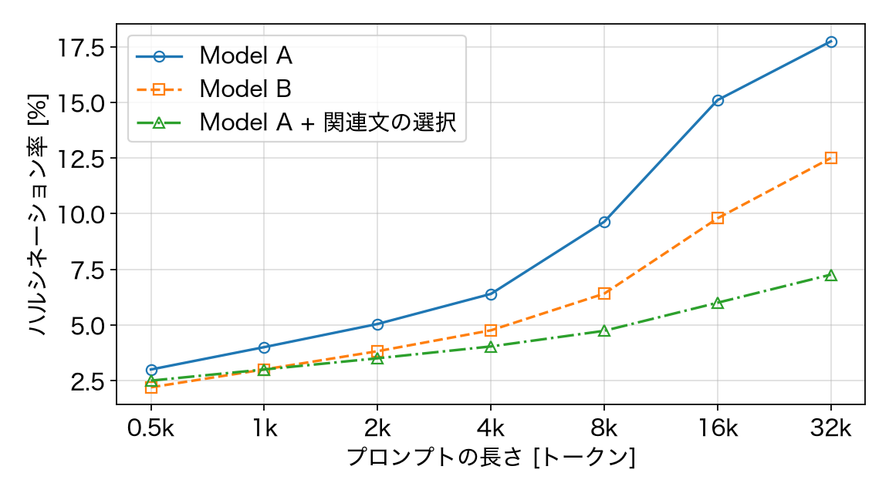

プロンプトの長さと
ハルシネーションの起こりやすさ
ハルシネーションの起こりやすさ
2026/11/10
Example Lab Taro Example
Example Lab Taro Example
研究の背景
プロンプトが長いほど，答えに事実と異なる内容が混ざりやすいのではないか
- 文脈を足すと，正答率が上がるという報告がある [1]
- 一方で，関係の薄い文が増えると，誤りも増えるおそれがある
- 本研究: 中身を変えずに長さ $L$ だけを変え，ハルシネーション率を測る
- 関係の薄い文を足して，長さをそろえる
[1] A. Author, Example Workshop on Language Models, 2025.
評価の方法
1 問ごとの判定から，長さ $L$ でのハルシネーション率を求める
$\displaystyle \hat{p}(L) = \frac{1}{N} \sum_{n=1}^{N} e_n(L)$(1)
- $e_n(L)$: $n$ 問目の答えに事実と異なる内容があれば 1，なければ 0
- $N = 500$ 問，$L$ は 0.5k〜32k トークンの 7 通り
- 判定は 2 人で行い，食い違った問は話し合って決めた
長さ−ハルシネーション率 特性
8k トークンを超えると，どのモデルでもハルシネーション率が急に増加

長さ−ハルシネーション率 特性（各 500 問．データは架空）
対策の比較
関係の深い文だけを選んで入れると，32k でも増加を抑えられた
| 入れ方 | 8k での率 | 32k での率 | 備考 |
|---|---|---|---|
| そのまま入れる | 10.2% | 18.5% | — |
| 要約してから入れる [2] | 8.9% | 12.1% | 要約の誤りが混ざる |
| 関連文の選択（本研究） | 6.4% | 7.8% | 選ぶ手間が増える |
| $L$ | プロンプトの長さ | $\hat{p}(L)$ | ハルシネーション率（式 (1)） |
[2] B. Author, Example Conference on NLP, 2025. ※ 数値はすべて架空